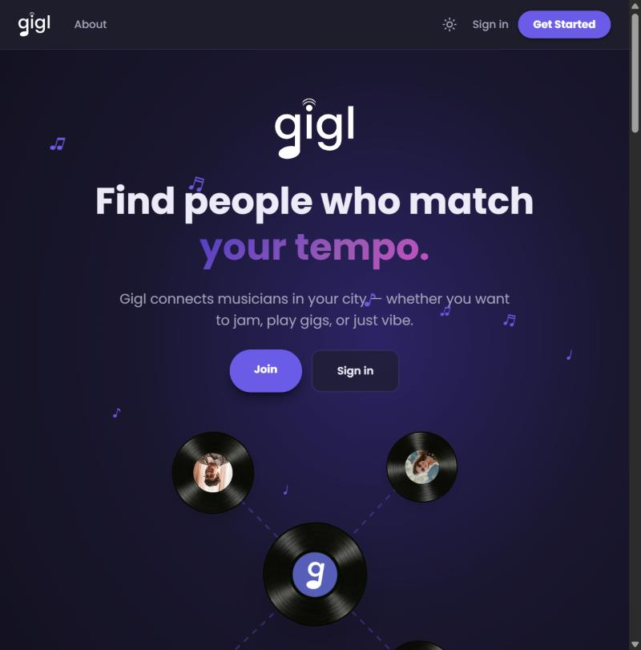
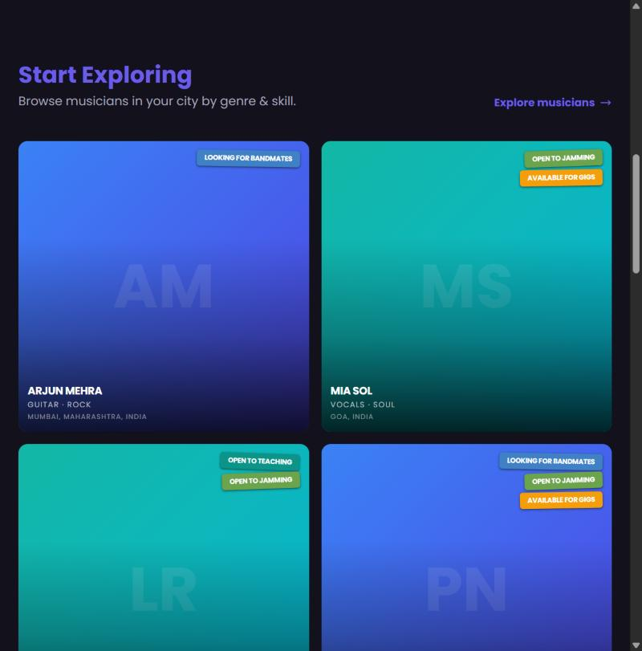
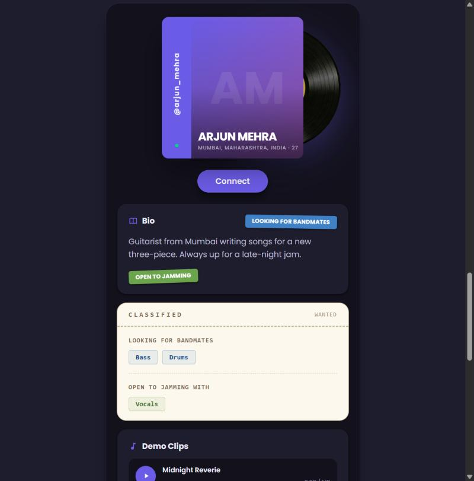

A web app for musicians to find people who match their tempo. Find bandmates, jam partners, students and gigs in your city, then connect and chat. I designed and built it myself, from the first research interviews to the live site.

Independent musicians find each other through scattered group chats, social posts and word of mouth. If you need a drummer, a jam partner or a guitar teacher, there's no single place to look, and no easy way to tell what someone sounds like or what they're after.
Every musician gets a profile that shows their instruments, genres, sound and what they're looking for right now. You browse musicians nearby, filter down to the right fit, send a connect request, and chat once it's accepted.

A paginated grid of musicians that you can filter by city, instrument, genre, intent and the role someone is looking for. Each card shows the person's intents as colour-coded stickers, so you can tell at a glance who wants to jam, gig or form a band.
City search covers thousands of places worldwide and runs on the server using GeoNames data, so the full dataset never loads in the browser.

Profiles are styled like a record sleeve with a vinyl disc behind it. The disc's colour changes with the musician's intents: the server recolours an SVG for each profile.
Send a connect request, accept or decline it from your inbox, and message each other once you're connected. Everything happens inside the app.
In-app alerts for new connect requests, accepted requests and new messages, so you don't miss a conversation.
List upcoming gigs and jam sessions on your profile with the date, venue and a ticket link.
Teachers list what they teach, the levels they take and whether lessons are in person or online. Learners say which instruments they want to pick up.
Every musician gets a username link and a QR code, which are easy to hand out at a gig or drop in a bio.
You can report or block anyone. Reports go to an admin review queue, members must be 16 or older, and teachers 18 or older.
Gigl runs on Next.js (App Router, React 19) with Supabase for the database, sign-in and file storage, so there's no separate backend. Row-level security rules in the database decide what each user can read and change.
It's deployed on Vercel, and every push to the main branch goes live.
Gigl started as a UX case study. I interviewed musicians and promoters, mapped their pain points, and tested a Figma prototype over two rounds. That research shaped the core idea: musicians want to be discovered and trusted before they're hired.
The live app builds on that foundation. Its scope has grown from booking gigs to everything musicians need to find each other.
Original Prototype ↗